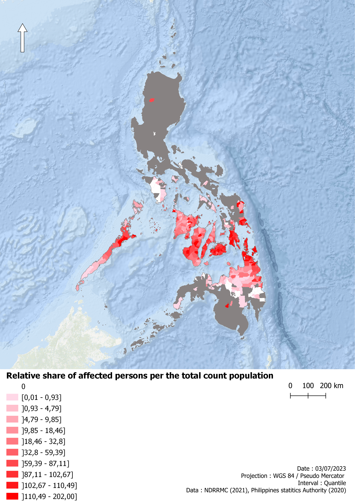

04.1
Observed loss and damage
The spatial distribution of affected populations broadly followed the trajectory of Typhoon Rai, while also revealing substantial variability between municipalities.
Relative shares of affected persons and families were calculated using 2020 census data. Higher proportions were generally observed in municipalities located closer to the typhoon's trajectory.

Relative share of affected persons across Philippine municipalities following Typhoon Rai.